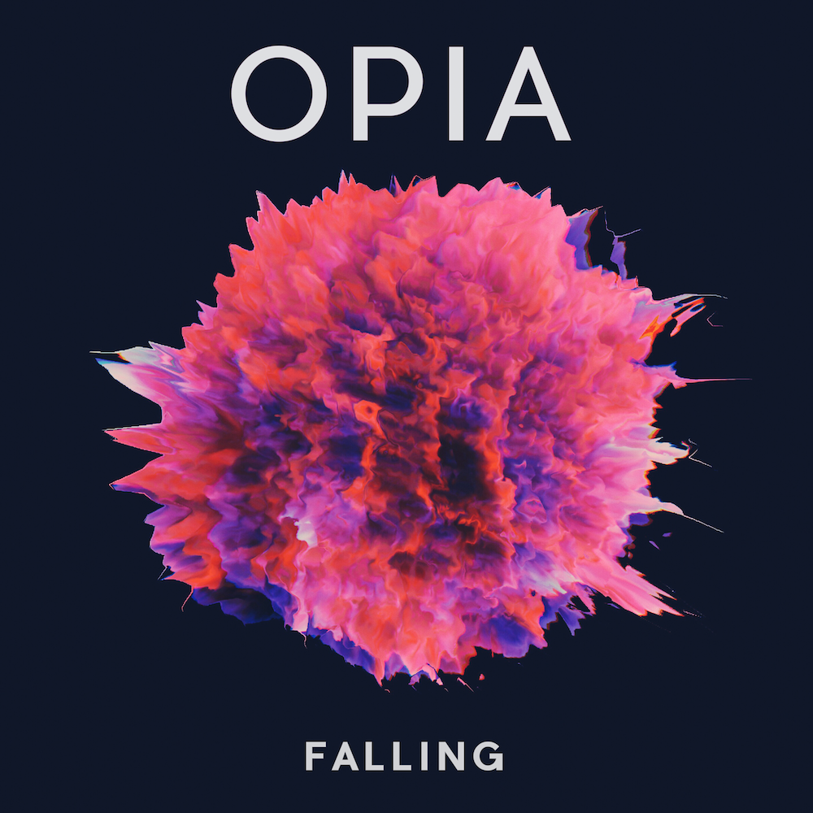

Facebook
Twitter
Soundcloud
Bandcamp
Email
Opia is a collaboration between Jacob Reske and Cole Citrenbaum. Jacob's background is in electronic production, sampling voices to create unique soundscapes. Cole is a guitarist and vocalist with roots in the blues. After meeting as Math and Physics majors at Yale, we formed Opia to merge our different backgrounds. We hope you enjoy the track.